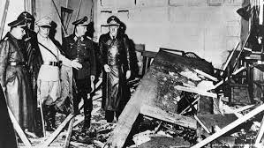

მეორე მსოფლიო ომის დროს აფრიკაში დაჭრილი ნაცისტი პოლკოვნიკი კლაუს ფონ შტაუფენბერგი მშობლიურ გერმანიაში ბრუნდება და წინააღმდეგობის მოძრაობის წევრებს უერთდება, რომელთაც სურთ ჩრდილოვანი მთავრობა შექმნან და მოკლან ადოლფ ჰიტლერი. მოვლენების განვითარებისას პოლკოვნიკი ცენტრალური ფიგურა ხდება და სახელმწიფო გადატრიალების ხელმძღვანელობა და პირადად ფიურერის მკვლელობაც მას დაევალება.
